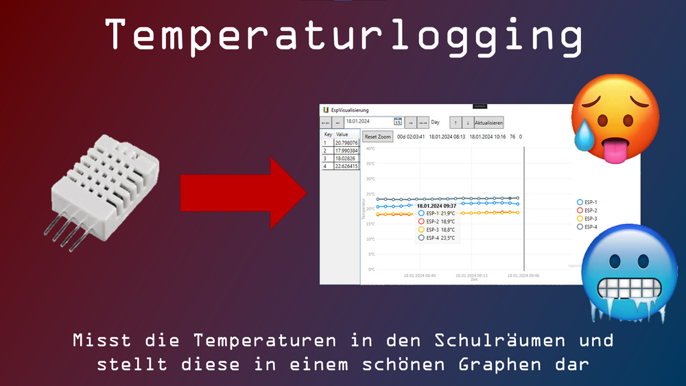

Projekte
Temperaturlogging

Erstellung von WPF-Anwendungen zur Anzeige von Temperaturen in Schulräumen und zur Verwaltung der dafür genutzten ESPs
Mehr erfahren
Erstellung von WPF-Anwendungen zur Anzeige von Temperaturen in Schulräumen und zur Verwaltung der dafür genutzten ESPs
Mehr erfahren